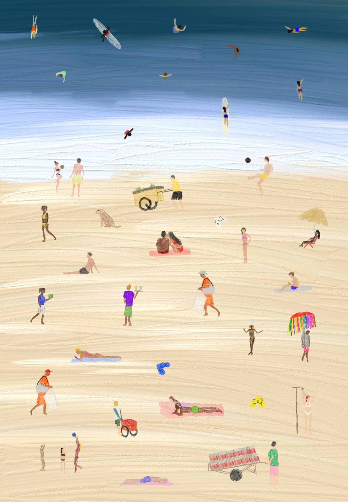

Um pouco da cultura praiana carioca

cartaz autoral
Esses cartazes capturam a essência complexa das praias cariocas ao traduzir, de maneira dinâmica, os diversos elementos que compõem sua identidade. Cada composição representa a interação entre o mar, a areia, o comércio e as atividades humanas, ilustrando como esses espaços se tornam centros sociais e culturais. A simplicidade dos traços e cores destaca o movimento e a convivência, enquanto a ausência de detalhes excessivos permite que o observador preencha as cenas com suas próprias memórias e experiências. Assim, os cartazes não apenas retratam as praias do Rio, mas também convidam à reflexão sobre a relação íntima entre o espaço e aqueles que o vivenciam.